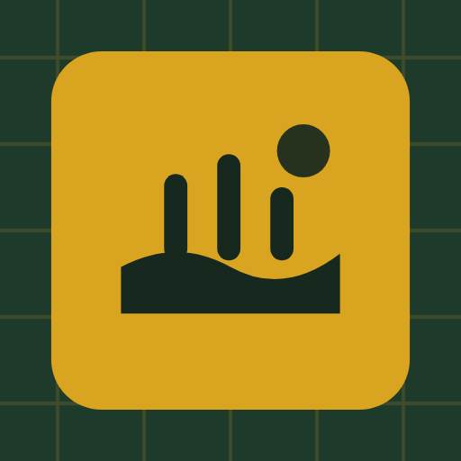

Last updated 8 November 2026
The short version: জমি হিসাব is a free land calculator that shows ads. Its results are estimates to help you check numbers. They are not a survey, a deed or a legal record, and local measures differ, so confirm anything important with official records and a licensed surveyor (amin). You can remove ads for 24 hours by watching a video, or for good with a one-time purchase through Google Play. Your ledger stays on your phone.
বাংলায় সংক্ষেপে: জমি হিসাব একটি ফ্রি জমির ক্যালকুলেটর, এতে বিজ্ঞাপন দেখানো হয়। অ্যাপের ফলাফল হিসাব মেলানোর জন্য আনুমানিক মান — এটি জরিপ, দলিল বা আইনি কাগজ নয়। এলাকাভেদে কানি-গন্ডার মাপ আলাদা হতে পারে, তাই জমি কেনাবেচা, হিস্যা ভাগ বা যেকোনো গুরুত্বপূর্ণ সিদ্ধান্তের আগে খতিয়ান, দলিল ও সরকারি রেকর্ডের সঙ্গে মিলিয়ে নিন এবং প্রয়োজনে আমিন বা সার্ভেয়ারের পরামর্শ নিন। এই অ্যাপ সরকারের বা ভূমি মন্ত্রণালয়ের কোনো অ্যাপ নয়। ভিডিও দেখে ২৪ ঘণ্টা, বা Google Play-তে একবার কিনে চিরতরে বিজ্ঞাপন সরানো যায়। আপনার খাতা শুধু ফোনেই থাকে। নিচের ইংরেজি অংশটিই পূর্ণ শর্তাবলি।
By installing or using জমি হিসাব you agree to these terms. If you do not agree, please uninstall the app.
জমি হিসাব is a calculator for land measurement in Bangladesh. It converts between land units (decimal or shotok, katha, bigha, kani, gonda, acre, square feet and others), works out plot area from length and width, land price, inheritance shares (hissa), lengths, sums and equal splits, and keeps a ledger of the results you save. Every calculation runs on your phone, offline.
The app is made by an independent developer. It is not an app of the Government of Bangladesh, the Ministry of Land, any land office or any survey authority, and it is not endorsed by them.
The numbers you type, your ledger, its names and notes, and your custom units are kept only on your phone. They are erased if you clear the app's data or uninstall it. The app does not back them up for you: use the backup option to save a file you keep, and keep it safe, because the developer cannot recover a lost ledger. The details are in the privacy policy.
The app, its design, icon, text and unit reference are © Sakkar Chowdhury. You may use the app for your own personal or work calculations, including for clients. Results, ledger entries and share images you create are yours to save, print and share.
The app is built with open-source software and fonts used under their own licences (including fonts under the SIL Open Font License). Nothing in these terms limits your rights under those licences.
Please don't copy, resell or redistribute the app, modify it to remove ads or bypass the purchase, or reverse engineer it except where the law allows. Don't present a result or share image from the app as an official document. Install it from Google Play so you receive updates and corrections.
The app is provided "as is". It is made with care and its calculations are tested, but the developer does not promise that it will be free of mistakes, that every unit value matches the custom in your area, that it will work on every device, or that it will always be available on Google Play. Your rights under consumer protection law that cannot be excluded are not affected.
To the extent the law allows, the developer is not liable for any loss arising from using the app or relying on its results, including losses from buying, selling, dividing or valuing land, from disputes, or from the loss of a ledger stored on a phone. Nothing in these terms excludes liability that cannot be excluded by law.
These terms may be updated as the app changes; the date at the top shows the latest version. Continuing to use the app after a change means you accept the updated terms.
| Date | Change |
|---|---|
| 8 November 2026 | First published, for version 1.1. |
Questions about these terms or the app: emailofs2o@gmail.com